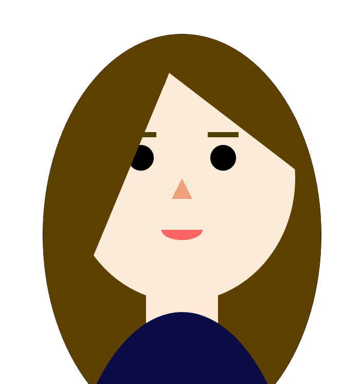
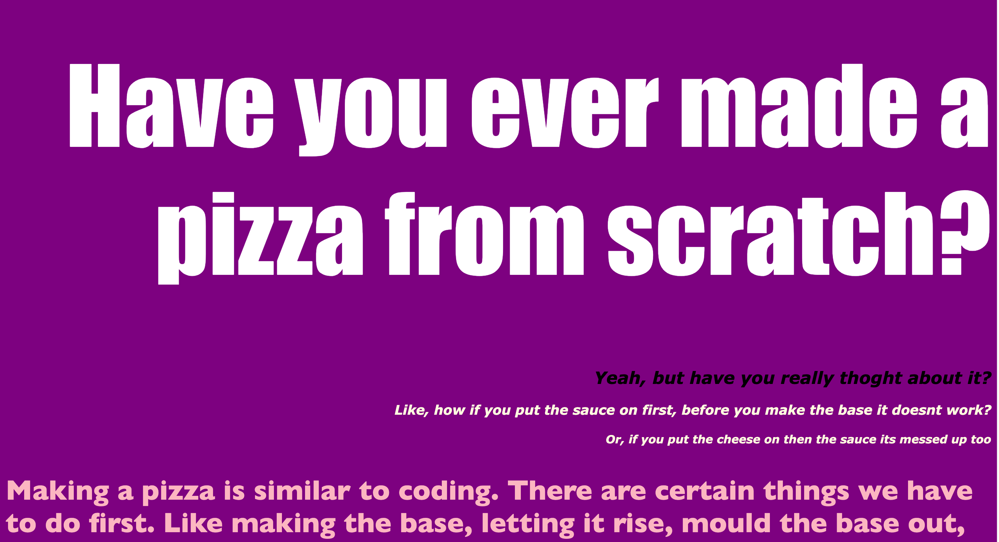

Intro
Hi, my name is Alice, I'm studying Digital Media at UWE Bristol University. I have an interest in graphic design, photography and media production. This is my personal website design project which is my first assessment for my GWDS class displaying the skills I have learnt through the coding sheets I have completed.
Typography


- Axal = Axal designs have an imaginary line which can break up the design either symmetrically or unsymmetrically.
- Radial = When your design has a point of focus, and all the other elements extend from that point.
- Dilatational = The design has a central point, and any other elements expand from it in a circular fashion.
- Random = All elements in the design are randomly organized with no pattern, direction, method, rule, aim or purpose. Made it appear more fun to the reader.
- Grid = When the design has invisible line either going vertically or horizontally to divide the page into sections to help keep all elements/content organized.
- Modular = The modular system shares similarities with the grid system except the different sections don't follow a specific pattern meaning they can overlap with one another as they prioritize flexibility.
- Transitional = The transitional system has layered elements in an unpredictable manner creating an illusion of movement.
- Bilateral = Text is arranged symmetrically along an axis; this technique is often used to create visual balanced images with the use of only words.
Coding Worksheet
Having never worked with HTML and CSS I struggled at the very start, especially with starting up a new repository in GitHub to link the two together. But as I made it through the worksheets it started to become a lot easier and I started to understand how to create a border, padding, flexbox and other attributes to create a simple website. I did find it difficult when uploading images onto GitHub as they didn't always work but I managed to work through this problem and finish the coding sheets anyway.
For the last couple worksheets, we looked at adding links to different websites, adding audio, anchor links, nav bar, google and adobe fonts. This was all new to me and i found it interesting to find out how websites are made, which I found very useful. Overall, the coding sheets were a good introduction to HTML and CSS and really helped when creating my website.
User Experience
I designed my website to be rather simple to use by wanting to have a single scrolling website but with one page which would contain the CARP project to separate those posters from the rest to let them standout more and don't get mixed up with my typography project. I initially did a simple sketch of my website just to understand the basic layout of where everything will be and left the Style.css to be decided while I was making it as well as deciding exactly how my work will be displayed on each section.
Reflection
hi